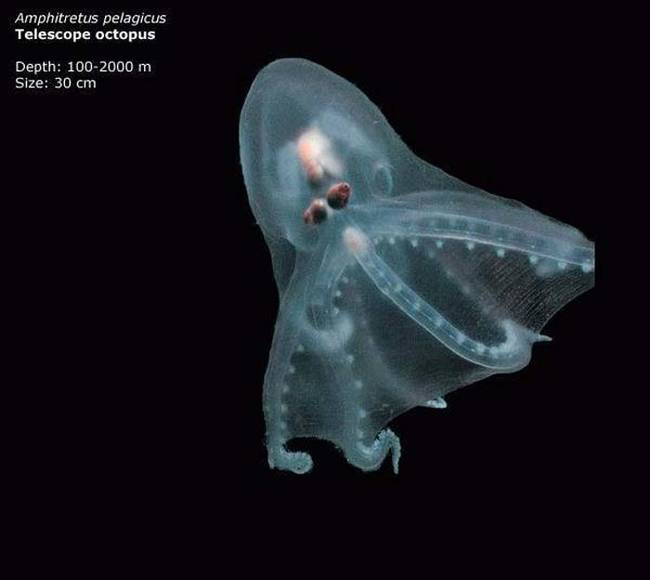
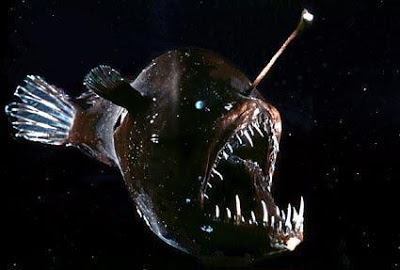
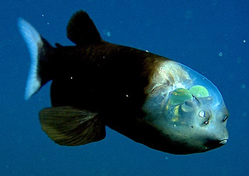

The world's oceans, lakes, and rivers are filled with the widest array of fish. When it comes to the Mariana Trench, there is no exception. Join us as we dive deep into the Earth's greatest depths! Here are just a few wonderful fish the trench has to offer:
Amphitretus pelagicus
Angler fish
Hatchetfish
The Mariana Trench is the oldest and deepest trench on Earth. Although its been around for many years, only in recent years scientists have been uncoivering its secrets. This site aims to touch upon the knowledge of the trench, spanning from topics such as history to recent findings.
The Mariana Trench
Deepest Trench in the world
Located in the western Pacific Ocean, an average of 124 miles/200km to the east of the Mariana Islands, in the Western Pacific East of Philippines..